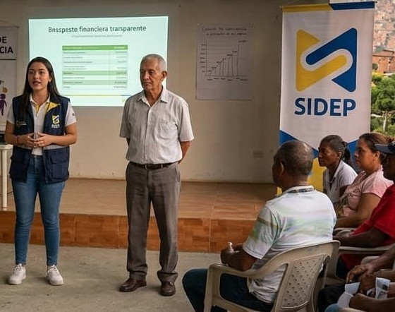
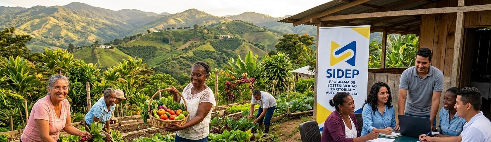
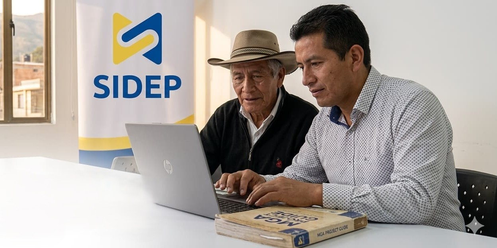

Capacitación integral para líderes de Juntas de Acción Comunal. Aprende a gestionar proyectos, dominar el marco legal y movilizar tu territorio con herramientas concretas y modernas.

Semanas
Módulos
Práctico
Desconocimiento del marco legal
Elecciones y actuaciones administrativas en riesgo jurídico por no dominar la Ley 2166 de 2021.
Proyectos que nunca se aprueban
Buenas ideas que se quedan en papel por falta de formulación técnica en MGA y marco lógico.
Recursos estatales que no llegan
Sin conocer SECOP II, las JAC pierden millones en contratos y convenios solidarios que les corresponden.
Conflictos internos sin resolver
Falta de herramientas de convivencia y conciliación que debilitan la cohesión de la organización.
Un programa académico diseñado bajo el modelo híbrido Nexus: encuentros presenciales que fortalecen el tejido social (Human Connect) y herramientas digitales e Inteligencia Artificial para optimizar la gestión comunal (Neo Connect).
Formación técnica cimentada en un sólido compromiso ético con el territorio. Porque SIDEP no solo forma personas, transforma instituciones.
Conocer másCombinamos lo mejor del aprendizaje presencial con el poder de la tecnología para adaptarnos a tu realidad.
Encuentros presenciales y talleres de cartografía social diseñados para fortalecer la confianza, la empatía y el tejido social entre los líderes comunales. El aprendizaje que solo ocurre cara a cara.
Plataforma virtual especializada e IA aplicada para agilizar la redacción técnica de proyectos, actas de asamblea y la navegación administrativa. La tecnología al servicio de tu comunidad.

"De la vocación social
a la gestión comunal."
Formación técnica cimentada en un sólido compromiso ético y social con el territorio. 10 semanas para cambiar tu comunidad.
Módulo 1
Orlando Fals Borda y la IAP
Investigación-Acción Participativa. El líder comunitario como investigador activo. El concepto de "sentipensar" el territorio.
Camilo Torres y el Amor Eficaz
Del discurso ideológico a la acción técnica concreta. Formulación de proyectos sociales con impacto territorial medible.
Recuperación Crítica y Memoria
Sistematización del saber popular. Valoración de la historia local para fortalecer la identidad comunitaria.
Módulo 2
Marco Legal Comunal
Análisis y aplicación de la Ley 2166 de 2021 (Estatuto Comunal). Funciones, derechos y deberes de los dignatarios comunales.
Ética, Transparencia y Convivencia
Control social, rendición pública de cuentas y fortalecimiento de Comités de Convivencia y Conciliación.
Módulo 3
Formulación de Proyectos (MGA)
Metodología General Ajustada adaptada a proyectos de impacto social. Matriz de marco lógico y árbol de objetivos.
Presupuestos y Contratación Estatal
Diseño de presupuestos participativos y dominio de la plataforma SECOP II para licitaciones y convenios solidarios.
Módulo 4
Comunicación Estratégica
Oratoria, manejo de asambleas, marketing social comunitario y resolución alternativa de disputas territoriales.
Sostenibilidad Territorial
Proyectos productivos comunales, economías populares, gestión ambiental y planeación del desarrollo local sostenible.
Para garantizar un impacto inmediato en los territorios, cada participante recibe de forma gratuita un conjunto de herramientas listas para usar desde el primer día.
Calculadora de presupuestos en Excel
Automatizada para la gestión financiera comunal sin complicaciones.
Formatos MGA para proyectos sociales
Estructurados y listos para presentar ante fondos públicos y privados.
Plantillas jurídicas de Acta de Asamblea
Bajo la Ley 2166 de 2021. Legalmente blindadas y listas para usar.
Guía audiovisual SECOP II
Paso a paso para registrarte, postularte y contratar con el Estado de forma autónoma.

Todo esto incluido en tu proceso de formación. Sin costo adicional.
Inscríbete hoy en la Escuela de Liderazgo Comunal SIDEP y lleva a tu JAC al siguiente nivel. Tarifas especiales para entidades reguladoras de juntas de acción comunal.